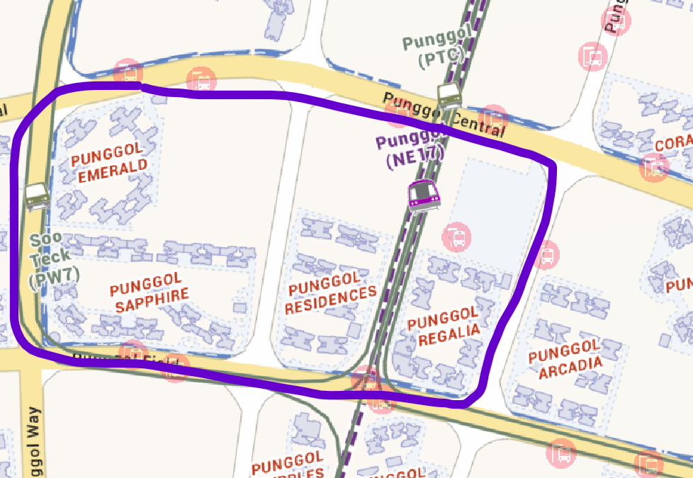
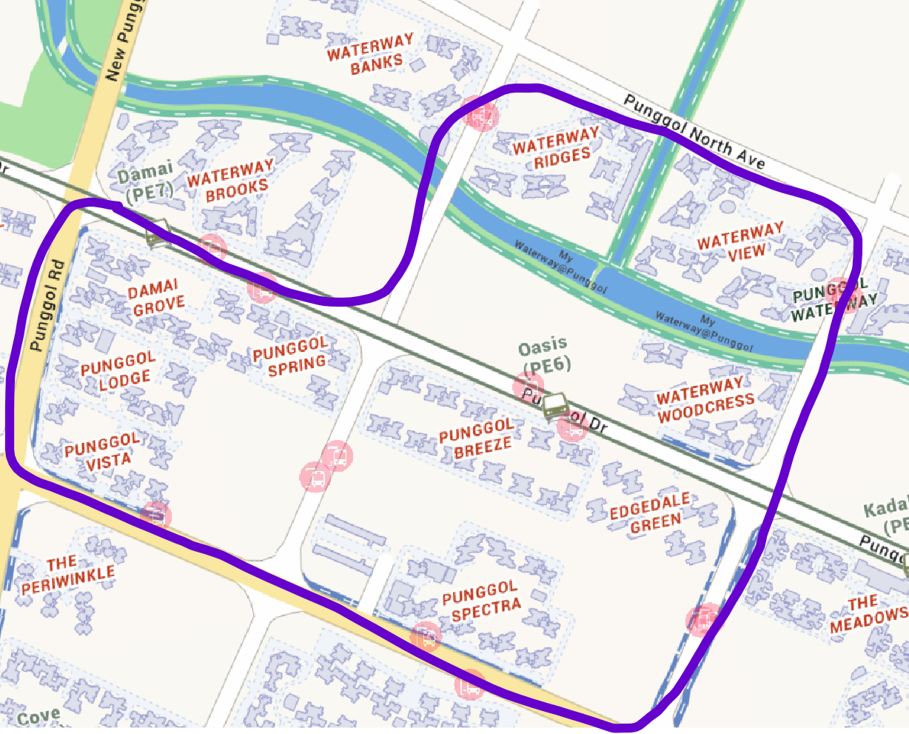
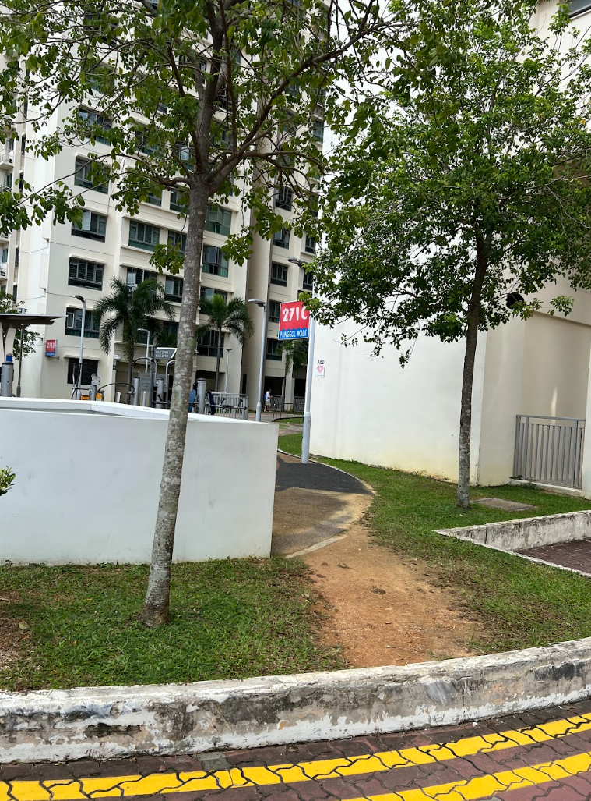
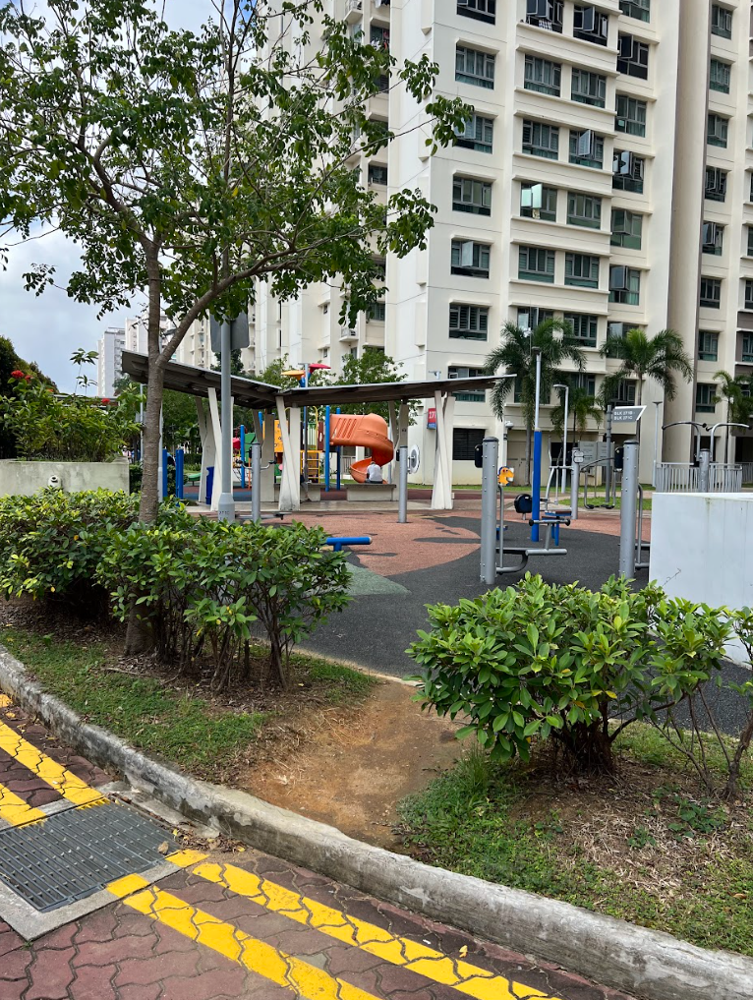
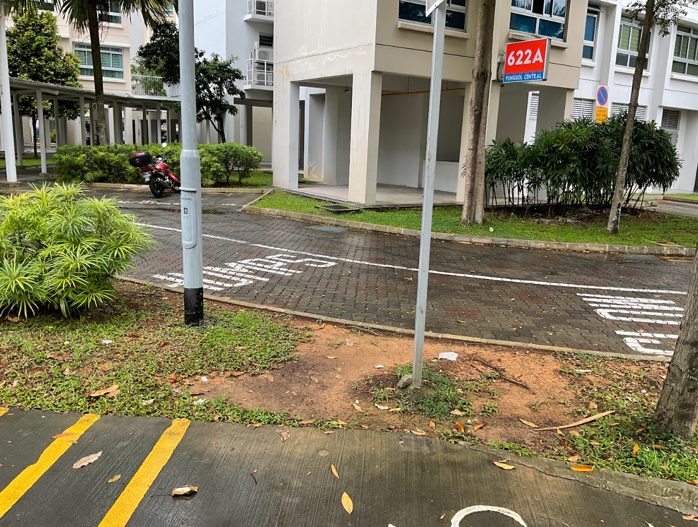
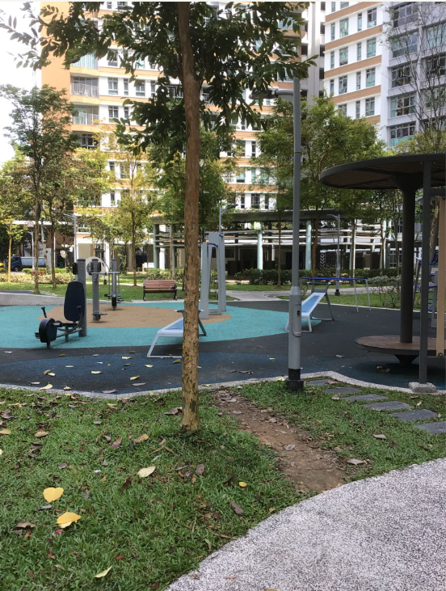
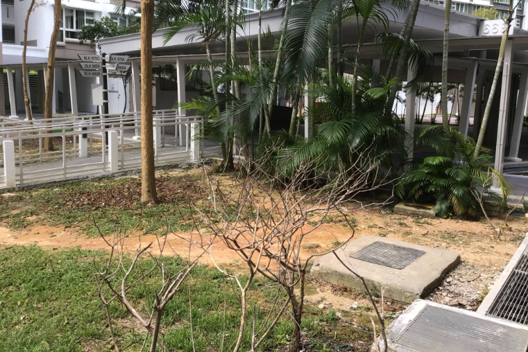
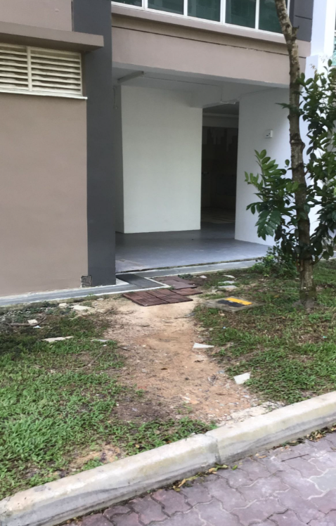
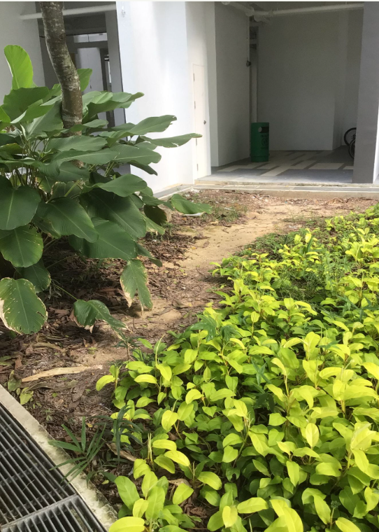
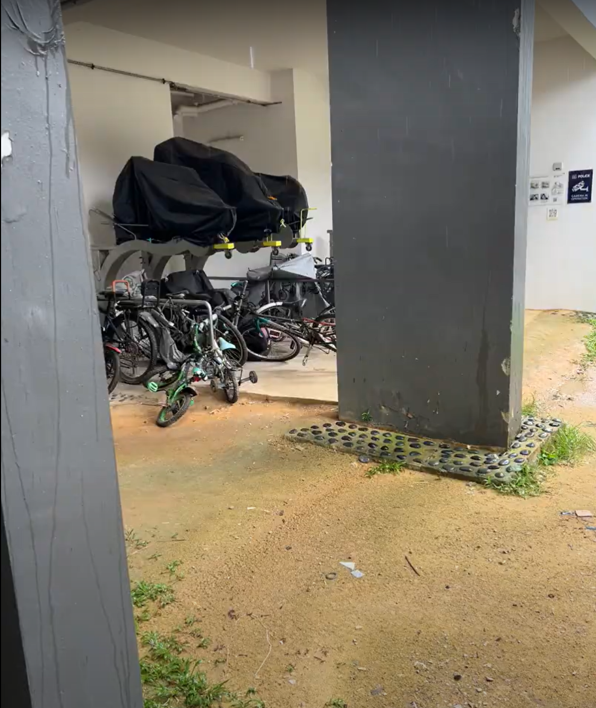

On-the-ground Research: Punggol
1st On-the-ground Research: Punggol West & Punggol Shore
Conducted on: 30/1/2024
Members: James, Karina, Shanelle
Total No. of desired lines found: 39
Punggol West |
Punggol Shore |
|---|---|
|  |  |
Locational Characteristic: |
Key Amenities: |
|
|
Desired Lines
Example:
| Description | Photos |
|---|---|
| Commonly found near internal car-based streets |    |
| Commonly found near the playgorunds/ exercise area |   |
| Commonly found near roundabouts |    |
Interviewing with Residents:
| Demographics | Overall Walking Experience: | Things to be improved: |
|---|---|---|
|
60+ years old couple, retired |
Pleasure but more can be done |
|
|
60 years old man, semi-retired |
So far so good |
|
|
34 years old woman, housewife with 1 child |
So far so good |
|
Observations from Punggol West:
In terms of walkability:
Desired paths are commonly found near car-based street and carparks
Assumption: HDB’s internal car-based streets → not walking-friendly to residents
Sheltered walkways are commonly found
E.g. From Punggol MRT/ Bus interchange to nearby estates
Assumption: Consideration of the tropical weather in Singapore
In terms of amenities:
Eateries are usually located below the the HDB blocks
Reachable in walking distances within 5-10 minutes
Sufficient parks/ recreational facilities but lack of maintenance